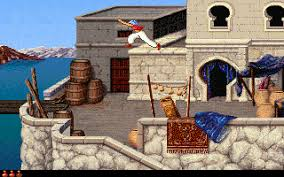

Prince of Persia 2: The Shadow and the Flame is a platform game released by Broderbund in 1993.
It received an HD remake for smartphones and tablets for iOS and Android in 2013
as Prince of Persia: The Shadow and the Flame.
Similar to the first Prince of Persia, the character explores various deadly areas by
running, jumping, crawling, avoiding traps, solving puzzles and drinking magic potions.
Prince of Persia 2 is, however, more combat-heavy than its predecessor. In the first game,
enemies appear only occasionally and are always alone, while in the sequel, up to four
enemies may appear at once, sometimes flanking the player, and may even be instantly
replaced by reinforcements when they are killed. As in Prince of Persia, the trick is
to complete the game under a strict time limit from 75 minutes in the game that passes
in real time. Lives are unlimited, but time cannot be regained (except by reverting
to a previously saved game). In other areas, more significant improvements have been
made. The graphics are far more complex than the simple look of the game's predecessor,
the areas explored are larger, and the variety of backdrops is greater.